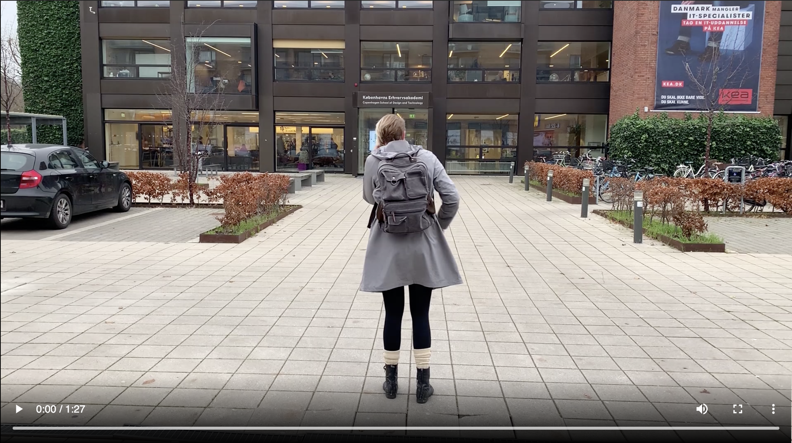
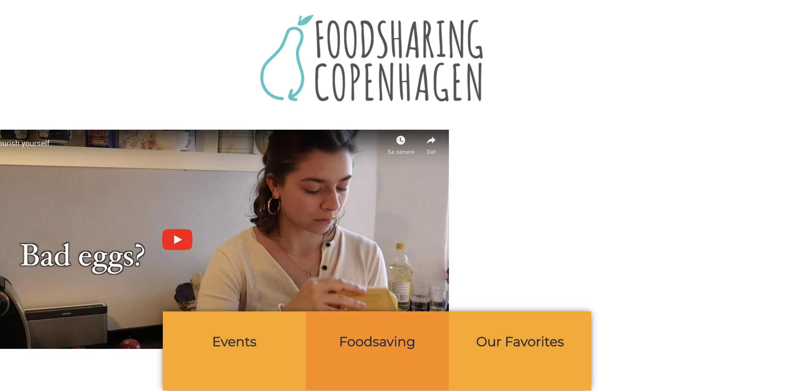
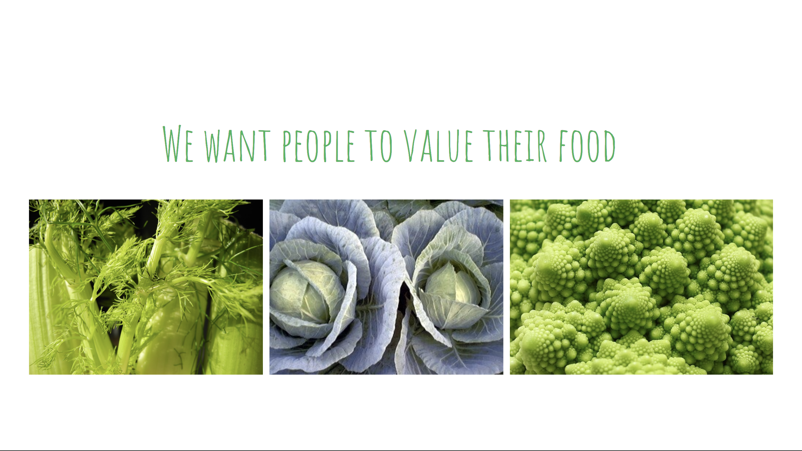

 For this project we were given groups of three. We were to create a video that told story without using any words. During the idea generation we used techniques that we learned during the presentations like S.C.R.A.P., B-roll, natural sound, and sound effects. We decided to make a video about the sounds that happen during class and how they annoyed our main character while she is trying to take notes.
Watch our story without words For our Campaign Site project we were put into groups of four and asked to create a campaign site for Foodsharing Copenhagen. We decided to make our video a story about a woman making food with different foods that are either ugly and slightly "bad" ingredients to show that they are still okay to use.
Check out our Campaign Site! When we pitched our site to the clients they really liked several of our ideas that we implemented on our site. We took the time to show that we were invested in people valuing their food and reducing their food waste.
See my Basic Content project page